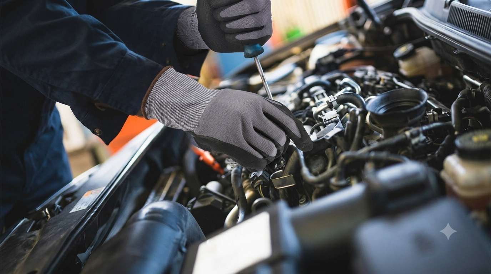

In high-risk industrial environments, selecting the right cut-resistant gloves is the foundation of proactive risk management. Safeguarding your workforce from sharp glass, metal stampings, and heavy machinery requires a clear understanding of specialized fiber technology and standardized protection ratings.
The Core Mechanism: Modern anti-cut gloves leverage advanced, high-performance yarns (like HPPE, Kevlar®, or steel cores) to catch and stop sliding blade edges before they pierce the skin.
Global Standards: Reliable protection is strictly verified by international safety benchmarks, specifically the ANSI/ISEA 105 (U.S.) and EN 388 (European) testing standards.
The sheer volume of protective glove materials available today makes choosing the right hand protection overwhelming. This FAQ guide targets the exact questions bulk buyers face when evaluating cut-resistant work gloves. Demystify complex industry standards and gain the insights needed to select the perfect pair of high-durability gloves from Guard Gloves for your specific mechanical hazards.
Occupational health studies reveal that thousands of debilitating hand injuries occur annually across industrial sectors due to contact with sharp edges, blades, and raw materials. On average, this translates to multiple severe lacerations every single working day that force operators into medical sick leave and stall production.
Implementing reliable cut-resistant safety gloves is one of the most effective ways to mitigate this risk. If your team handles sheet metal, glass, or sharp tools, investing in premium anti-cut gloves is an essential step to secure workplace safety, minimize liability, and protect your workforce.
When sourcing cut-resistant safety gloves, you will encounter two primary global standards: the American ANSI/ISEA 105 and the European EN 388. Understanding these ratings is key to choosing the correct safety classification for your facility.
ANSI/ISEA 105 (A1 to A9 Scale): Measures the weight (in grams) required for a straight blade to cut through the fabric. Levels A1 to A3 protect against light hazards (general handling), A4 to A6 handle medium threats (glass/metal fabrication), and A7 to A9 are engineered for extreme hazards (heavy stamping and butchery).
EN 388 (A to F Coup & TDM-100 Tests): Uses a letter rating scale from A (lowest cut resistance) to F (highest protection) using the TDM-100 testing method.
matching the right safety rating to your environment prevents over-purchasing while ensuring complete workplace safety.
Under the European EN 388 standard, industrial work gloves undergo a battery of physical assessments to determine their resistance to mechanical risks like abrasion, tearing, punctures, and impact forces. However, for most industrial safety managers, glove cut resistance is the most critical rating. This essential safety metric is evaluated using two distinct test methodologies:
Coup Test (Circular Blade): Best for measuring light, everyday hazard defense. However, modern high-durability composite yarns can dull the rotating blade, making the results less reliable.
ISO 13997 Test (Linear Blade): The definitive standard for high-risk industrial environments. It applies precise linear pressure to measure the actual cutting force, providing an accurate safety score from Level A to F.

Managing a global supply chain requires understanding how American and European safety ratings intersect. The ANSI 105 standard utilizes the advanced Tomodynamometer (TDM) testing method—the exact same physical mechanical test as the European ISO 13997 straight blade test.
The primary differences lie in the reporting metrics: ANSI measures cut-through resistance in grams rather than Newtons, offering a highly precise, nine-level scale from ANSI A1 to ANSI A9.
This direct testing alignment allows procurement managers to confidently cross-reference international catalogs and select the correct industrial safety gloves to meet local OSHA compliance.
Partner with Guard Gloves to access a fully dual-certified inventory that meets both ANSI and EN safety mandates.
The ideal level of industrial cut protection depends entirely on the operational hazards of your facility. Every facility risk assessment should evaluate mechanical contact with sharp blades, jagged edges, or raw metals to identify the correct PPE requirements. To simplify procurement, standard industrial tasks are categorized into three primary risk bands:
Best for: General warehousing, shipping logistics, packaging, and light electronics assembly.
Focus: High flexibility, basic abrasion resistance, and maximum comfort.
Best for: Automotive assembly, heavy construction, HVAC ducting, and oil & gas operations.
Focus: Balance of mechanical durability, reliable slice protection, and finger dexterity.
Best for: Metal fabrication, glass manufacturing, paper production, recycling sorting, and pulp processing.
Focus: Maximum shear-force resistance utilizing reinforced stainless steel or aramid core fibers.
Standardized laboratory testing provides an excellent baseline, but paper-thin metal shavings, sharp steel wires, and unpredictable workplace angles present unique hazards that controlled lab environments simply cannot simulate. For this reason, certified protection levels should be treated as general guidelines rather than absolute guarantees. When selecting industrial safety gloves, safety managers must look at the bigger picture:
Heavy-gauge protection is useless if operators remove their gloves to handle small parts.
Oil, water, and lubricants require specialized palm coatings (such as nitrile or polyurethane) to maintain a secure grip.
Properly fitted gloves prevent hand fatigue and encourage constant compliance.
Discarding industrial work gloves simply because they are dirty or sweaty is an unnecessary drain on your operating budget. By sourcing high-quality, launderable cut-resistant safety gloves, procurement managers can significantly extend product lifespans and lower overall replacement costs.
Long-Lasting Cut Protection: Professional laundry testing confirms that premium anti-cut gloves can be washed 3 to 4 times without compromising their certified ANSI or EN 388 cut-defense ratings.
Massive Cost Savings: Laundering a single pair of high-durability gloves four times delivers the same operational lifespan as buying four cheap, disposable pairs—drastically reducing your commercial PPE spend.
The Durability Factor: When evaluating long-term value, always look closely at the glove's abrasion resistance scores. High abrasion ratings guarantee the fabric holds up to both heavy-duty handling and repeated wash cycles.